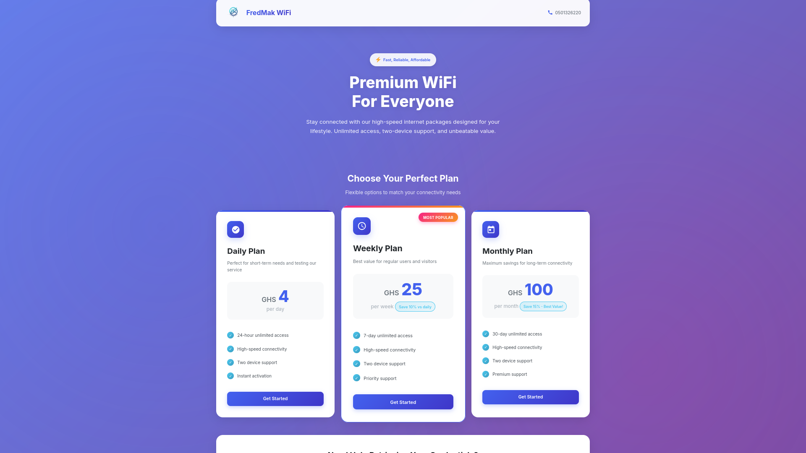

Node.js · Express · PostgreSQL · Paystack
Fredmak Internet Services
Full-stack internet service management platform for PKAY INTERNET SERVICES, serving a student hostel in Ghana. Handles end-to-end transaction flow from plan selection through payment to credential distribution with zero manual intervention.
Key features: Real-time payment verification · Automated credential delivery · Email automation · Mobile-responsive UI